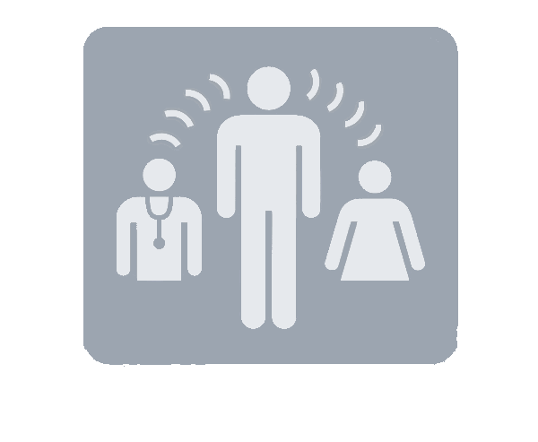

Os intérpretes facilitam a comunicação entre pessoas que falam idiomas diferentes, transmitindo mensagens de forma rápida e precisa em tempo real.
Saiba Mais
O intérprete traduz a fala enquanto o orador ainda está falando, sendo muito utilizada em conferências e eventos internacionais.
O intérprete aguarda o orador concluir parte da fala antes de transmitir a mensagem para o outro idioma.
Profissionais especializados traduzem informações entre a Língua Brasileira de Sinais (Libras) e o português, promovendo acessibilidade.
Os intérpretes ajudam a superar barreiras linguísticas, permitindo a troca de informações, conhecimentos e experiências entre diferentes culturas.
É importante ter domínio dos idiomas, boa memória, concentração, rapidez de raciocínio e excelente comunicação.
Acesse nossa experiência única de dublar!
Testar